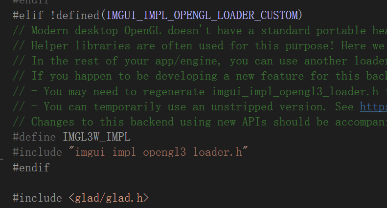
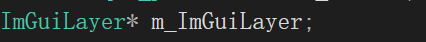

笔记14.Imgui Docking
他承认了确实将imgui_glfw的功能大部分放入了Imgui_Layer中实现了。
之前在imgui的笔记中也说过，cherno将渲染层opengl的imgui文件自己命名ImguiOpenGLRenderer，同时将glfw3的实现抽出来放在了imguiLayer中的文件中。
但是这样自己维护和功能的更新就带来了麻烦
虽然视频更新了拉取的Docking分支库，但是最新的imgui显然整合了这个功能，所以不太需要追踪分支。
在此之前还是说一下imgui的使用。
我们在文档中看到使用方法
Example: If you are using GLFW + OpenGL/WebGL 示例：如果您使用的是 GLFW + OpenGL/WebGL
Full standalone example: example_glfw_opengl3/main.cpp
完整独立示例：example_glfw_opengl3/main.cppAdd to Includes: 添加到包含：
#include "imgui.h" #include "imgui_impl_glfw.h" #include "imgui_impl_opengl3.h"Add to Initialization: 添加到初始化：
// Setup Dear ImGui context IMGUI_CHECKVERSION(); ImGui::CreateContext(); ImGuiIO& io = ImGui::GetIO(); io.ConfigFlags |= ImGuiConfigFlags_NavEnableKeyboard; // Enable Keyboard Controls io.ConfigFlags |= ImGuiConfigFlags_NavEnableGamepad; // Enable Gamepad Controls io.ConfigFlags |= ImGuiConfigFlags_DockingEnable; // IF using Docking Branch // Setup Platform/Renderer backends ImGui_ImplGlfw_InitForOpenGL(YOUR_WINDOW, true); // Second param install_callback=true will install GLFW callbacks and chain to existing ones. ImGui_ImplOpenGL3_Init();Add to start of main loop:
添加到 main 循环的开头：// (Your code calls glfwPollEvents()) // ... // Start the Dear ImGui frame ImGui_ImplOpenGL3_NewFrame(); ImGui_ImplGlfw_NewFrame(); ImGui::NewFrame(); ImGui::ShowDemoWindow(); // Show demo window! :)Add to end of main loop:
添加到 main 循环的末尾：// Rendering // (Your code clears your framebuffer, renders your other stuff etc.) ImGui::Render(); ImGui_ImplOpenGL3_RenderDrawData(ImGui::GetDrawData()); // (Your code calls glfwSwapBuffers() etc.)Add to Shutdown: 添加到关机：
ImGui_ImplOpenGL3_Shutdown(); ImGui_ImplGlfw_Shutdown(); ImGui::DestroyContext();That should be all! 这应该就是全部！
- 我们先解释一下头文件吧
imgui.h 是 ImGui 的核心框架，提供了通用的 UI 逻辑，提供了逻辑的抽象层，具体的需要在对应的后端cpp中进行实现。
"imgui_impl_glfw.h" 是与操作系统相关的输入和窗口管理实现，让 ImGui 能够响应用户输入和处理窗口事件，就是将glfw的对设备输入的检查函数与imgui中的回调函数函数挂钩，让imgui能够接收到对应的事件。
但是我们要注意使用这个头文件的前提，是你引入了glfw的库，我们在imgui_impl_glfw.cpp中可以看到需要你按照他的路径方式来导入glfw库，这样才能调用glfw的库函数。
imgui_impl_openGL.h 使用 OpenGL 渲染 API，将 UI 绘制数据翻译成实际的图形指令并渲染到屏幕上。
要注意imgui又是如何加载openGL的函数地址呢，我们可以看到（默认没有定义IMGUI_IMPL_OPENGL_LOADER_CUSTOM，只不过是我定义的），在imgui_impl_openGL.cpp 文件中引入了imgui_impl_opengl3_loader.h,点进去阅读文档，你会发现就是一个小型的opengl函数地址加载器。
和你直接引入<glad/glad.h>的区别就在于：
- loader会引入imgui中需要的函数地址，而不会多余的加载，从而实现了小体量，关于loader的具体方式，是使用脚本什么的来加载，较为复杂，可以自己参阅源代码中Loader的gl3w的实现库去。
另外补充一点，他怎么知道你使用的glad还是glew来加载openGL的？
因为OpenGL是规范，各个库只是加载函数的方式不同，但是函数名称和接口规范都是大体一致的，所以不管你使用哪一个，他只要使用规范的OpenGL函数就可以实现渲染逻辑。
完整工作流：
imgui_impl_glfw收集用户输入（鼠标、键盘）并将其反馈给核心框架。imgui_impl_dx12根据核心框架生成的绘制数据，将 UI 渲染到屏幕。
- TO DO
主循环的逻辑部分到时候，就是上面的示例。
- 我们先把前面的头文件的实现都放在一个翻译单元（CPP文件）
所以我们呢创建了ImGUiBuild.cpp
#include "hzpch.h"
#include "backends/imgui_impl_glfw.cpp"
#include "backends/imgui_impl_opengl3.cpp"
各自的cpp文件自带头文件，这样所有函数都实现了，之后我们只需要的时候只要引入对应的头文件就好了。
- 首先删除了OpenGL文件夹下的文件（因为已经有了现成的，在build中包含）
- 然后大体重写了imguiLayer的结构
//imguiLayer.h
class ImGuiLayer: public Layer
{
public:
ImGuiLayer();
~ImGuiLayer();
virtual void OnAttach() override; //创建imgui所需的初始化操作
virtual void OnDetach() override; //删除imgui的卸载资源等操作
virtual void OnImGuiRender()override; //渲染所需内容
void Begin(); //每一帧渲染前的初始化
void End(); //处理所有渲染数据并提交渲染数据，更新渲染所有窗口
private:
float m_Time = 0.0f;
};
//imguiLayer.cpp
ImGuiLayer::ImGuiLayer()
{
}
ImGuiLayer::~ImGuiLayer()
{
}
void ImGuiLayer::OnAttach()
{
//Setup Dear ImGui context
IMGUI_CHECKVERSION();
ImGui::CreateContext();
ImGuiIO& io = ImGui::GetIO();
io.ConfigFlags |= ImGuiConfigFlags_NavEnableKeyboard; //Enable Keyboards Controls
//io.configFlags |=ImGuiConfigFlags_NavEnableGamepad; //Enable Gamepad Controls
io.ConfigFlags |= ImGuiConfigFlags_DockingEnable; //Enable Docking
io.ConfigFlags |= ImGuiConfigFlags_ViewportsEnable; //Enable Multi-Viewport / Platform Windows
//io.ConfigFlags |= ImGuiConfigFlags_ViewportsNoTaskBarIcons;
//io.ConfigFlags |= ImGuiConfigFlags_ViewportsNomerge;
//Setup Dear ImGui style
ImGui::StyleColorsDark();
//ImGui::StyleColorClassic();
//When viewports are enabled we tweak windowsRounding/WindowBg so platform windows can look identical
ImGuiStyle& style = ImGui::GetStyle();
if (io.ConfigFlags & ImGuiConfigFlags_ViewportsEnable)
{
style.WindowRounding = 0.0f;
style.Colors[ImGuiCol_WindowBg].w = 1.0f;
}
Application& app = Application::Get();
GLFWwindow* window = static_cast<GLFWwindow*>(app.GetWindow().GetNativeWindow());
//Setup platform/Renderer bindings
ImGui_ImplGlfw_InitForOpenGL(window, true);
ImGui_ImplOpenGL3_Init();
}
void ImGuiLayer::OnDetach()
{
ImGui_ImplOpenGL3_Shutdown();
ImGui_ImplGlfw_Shutdown();
ImGui::DestroyContext();
}
void ImGuiLayer::OnImGuiRender()
{
static bool show = true;
ImGui::ShowDemoWindow(&show);
}
void ImGuiLayer::Begin()
{
//它们分别处理 OpenGL 和 GLFW 的新帧初始化，例如处理输入、刷新状态等。
ImGui_ImplOpenGL3_NewFrame();
ImGui_ImplGlfw_NewFrame();
//告诉 ImGui 开始一帧新的绘制操作。所有的 UI 绘制操作都应该在 NewFrame 和 Render 之间完成。
ImGui::NewFrame();
}
void ImGuiLayer::End()
{
ImGuiIO& io = ImGui::GetIO();
Application& app = Application::Get();
io.DisplaySize = ImVec2((float)app.GetWindow().GetWidth(), (float)app.GetWindow().GetHeight());
//Rendering
ImGui::Render();
ImGui_ImplOpenGL3_RenderDrawData(ImGui::GetDrawData());
if (io.ConfigFlags & ImGuiConfigFlags_ViewportsEnable)
{
//由于每个窗口可能有自己的 OpenGL 上下文，所以需要使用 glfwMakeContextCurrent() 恢复之前的上下文。
GLFWwindow* backup_current_context = glfwGetCurrentContext();
ImGui::UpdatePlatformWindows();
ImGui::RenderPlatformWindowsDefault();
glfwMakeContextCurrent(backup_current_context);
}
}
- 调试imgui显然属于引擎层面的，我们放入Application.cpp中实现渲染，依旧是layer的放入和使用方法。
但是又如下的修改。
- layerstack的对应layer获取放弃了迭代器选择了索引计算位置。
void LayerStack::PushLayer(Layer* layer)
{
//m_LayerInsertIndex是Layer中前半层和后半层的中间
m_Layers.emplace(m_Layers.begin()+m_LayerInsertIndex, layer);
m_LayerInsertIndex++;
}
为什么数组的迭代器能够与unsigned int直接相加计算到迭代器地址？
因为内部实现了迭代器和整数相机的重载，从而可以计算对应的偏移量，获得对应位置的指针。
- 原本使用uniqe_ptr指针存储imguiLayer，中途换成了普通指针储存
因为layer统一需要放进layerstack中进行管理，而layerstack却又是vector数组实现的
上面看到，存放是通过emplace实现的。
std::unique_ptr 是一种智能指针，它独占其所指向的资源的所有权，因此 std::unique_ptr 是不可复制的，拷贝构造和拷贝赋值操作被禁用，但是支持移动构造和移动赋值，允许资源从一个 std::unique_ptr 转移到另一个 std::unique_ptr。
而emplace容器的内存区域直接构造对象（原地构造），而不是插入一个现有的对象。
移动可以通过
emplace_back(std::move(ptr))明确实现，避免语义不清
所以最后使用了普通指针存放imguiLayer。
